Sign up for the next game, see where you are in line, and get a buzz on your phone when it's your turn.
cmubmt.vercel.app
Players · pages 2–7
Getting in2
Joining a group3
“It's your turn” alerts4
Signing up friends5
Switching and starting6
Playing, finishing, history7
Host · pages 8–10
Before the session8
Running the line9
Fixing mistakes, ending the day10
victorkw@andrew.cmu.edu · github.com/TempestShaw
CMU Recreational BadmintonFor players
1 · Getting in
You check in once per session with your name and today's code. The code is on the court-side screen, so you have to be at the courts.
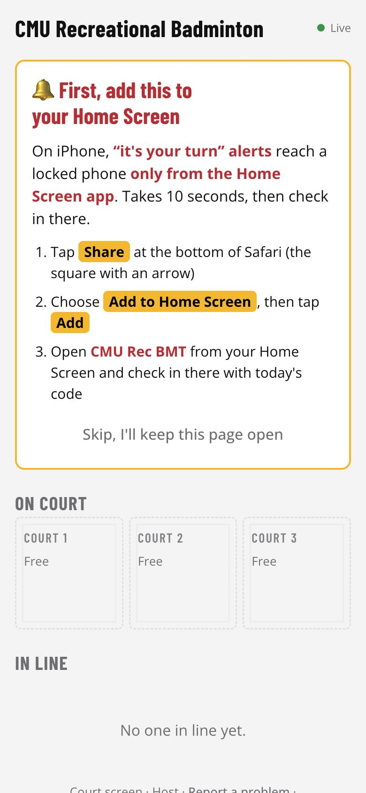
iPhone: add to Home Screen first
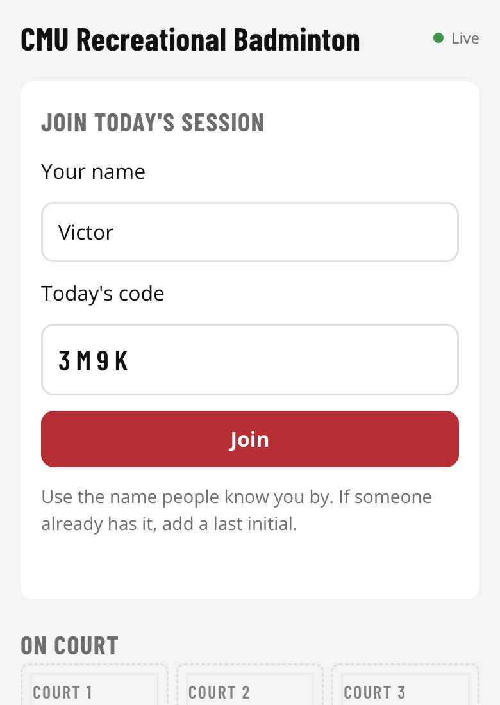
Check in with your name and today's code
Steps
Scan the QR code on the court-side screen (or open cmubmt.vercel.app). Scanning fills in today's code for you.
iPhone only: the yellow box asks you to add the site to your Home Screen first. Tap Share → Add to Home Screen, then open CMU Rec BMT from your Home Screen and check in there. Only the Home Screen app can buzz a locked iPhone. Android phones skip this step.
Type your name and today's code, then tap Join.
Names are unique for the day. If someone already uses your name, you'll be asked “Is that you?”. Tap Yes only if it really is you (for example a friend signed you up, or you switched phones). Otherwise pick I'm someone else and add a last initial, like “Alex C”.
cmubmt.vercel.appPlayers · 2
CMU Recreational BadmintonFor players
2 · Joining a group
Games are doubles: four people per group. Groups go on court strictly in line order.
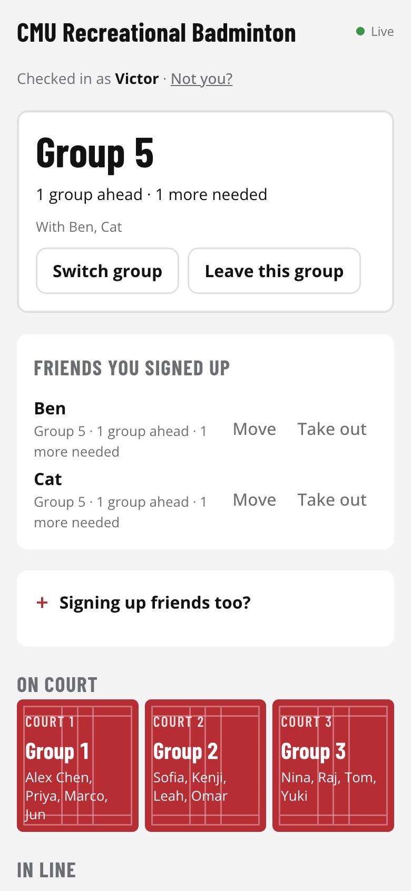
Your group card at the top
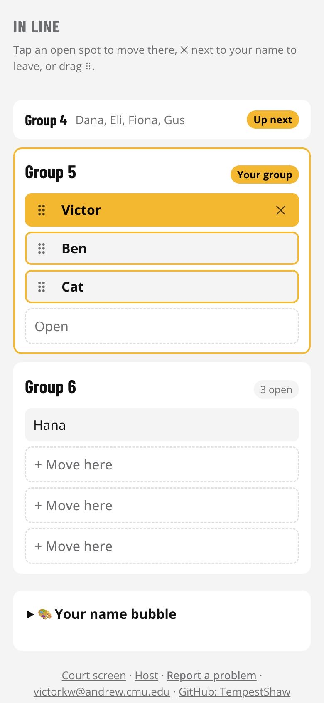
The line: you in gold, friends outlined
Three ways to join
Find me a group puts you in the first group with room, or starts a new one.
Tap + Join on an open spot in a specific group.
+ Start a new group at the bottom of the line.
Reading the line
Up next is the group whose turn is next. Your group marks yours.
Your card says how many people are still needed, or how many groups are ahead of you.
When a group is full and a court is free, it goes on automatically. A short group is never skipped by a full one behind it.
cmubmt.vercel.appPlayers · 3
CMU Recreational BadmintonFor players
3 · “It's your turn” alerts
Turn alerts on once and you can put your phone away: it buzzes even when locked.
Turn them on
After joining a group, tap 🔔 Alert me when it's our turn on your group card and allow notifications.
Tap Send a test in 10 seconds, lock your phone, and check the test arrives.
What you'll get
You're up next: your group is first in line. Warm up.
A court is free: your group is up: you're first but short of players. Grab someone and tap Start.
You're up! Head to Court N: your game is on.
With the page open you also get a full-screen yellow alert, a beep and a buzz.
No alert? On iPhone, alerts only work from the Home Screen app (iOS 16.4 or later). Also check that notifications are allowed for the site and that Focus / Do Not Disturb isn't on. If alerts can't work on your phone, your group card says so; keep the page open instead.
Friends you sign up get alerts only on their own phones, after they check in with the same name and turn alerts on.
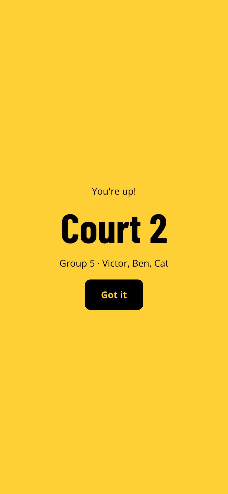
The full-screen alert
cmubmt.vercel.appPlayers · 4
CMU Recreational BadmintonFor players
4 · Signing up friends
Just came off court with friends? Put the whole group down in one go.
Open Signing up friends too?
Keep Include me ticked if you're playing too, and type one name per box (up to four people in all). Typing a comma jumps to the next box; names of people already checked in are suggested.
Pick a group (Auto finds one with room for everyone) and tap Sign up.
After signing them up
Friends you signed up lists where each one is. Use Move to put a friend in another group, or Take out to remove them.
A friend can take over their own spot: they check in on their own phone with the same name and answer Yes to “Is that you?”.
Fair-play limits
One spot per person. Sign up for your next game after this one ends.
One phone can hold spots for up to three friends who haven't checked in themselves.
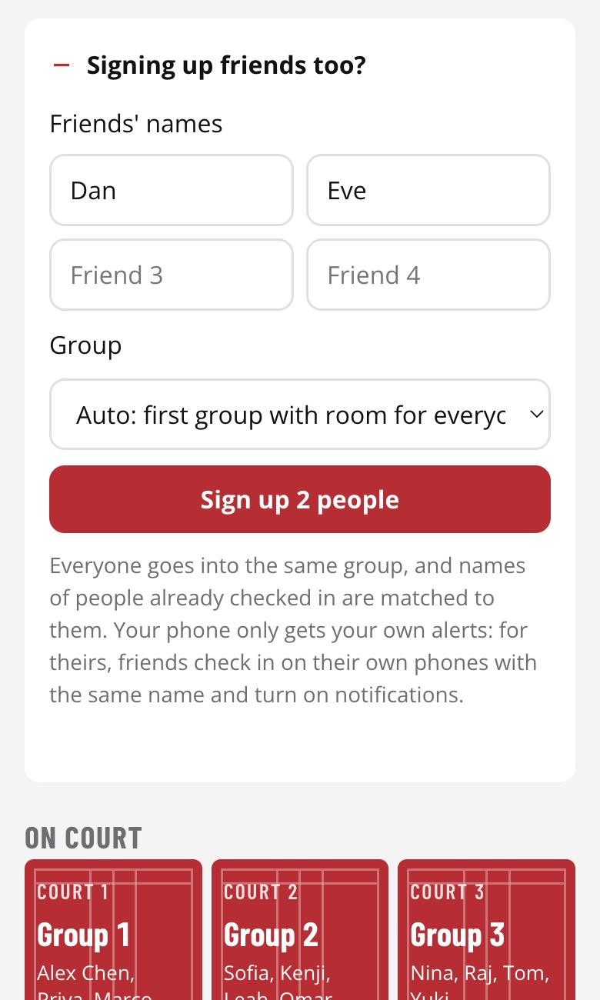
One box per friend
cmubmt.vercel.appPlayers · 5
CMU Recreational BadmintonFor players
5 · Switching and starting
Change groups with a tap, and start a short game when it's your turn.
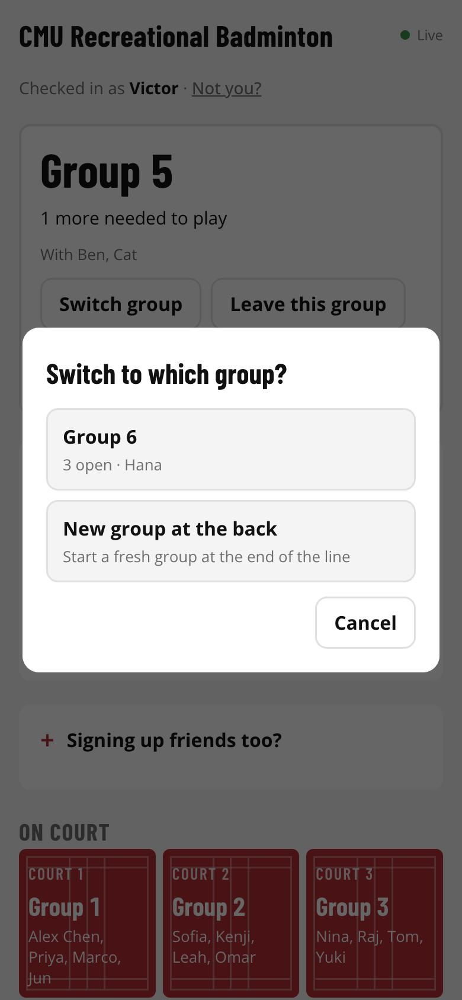
Switch group: tap where to go
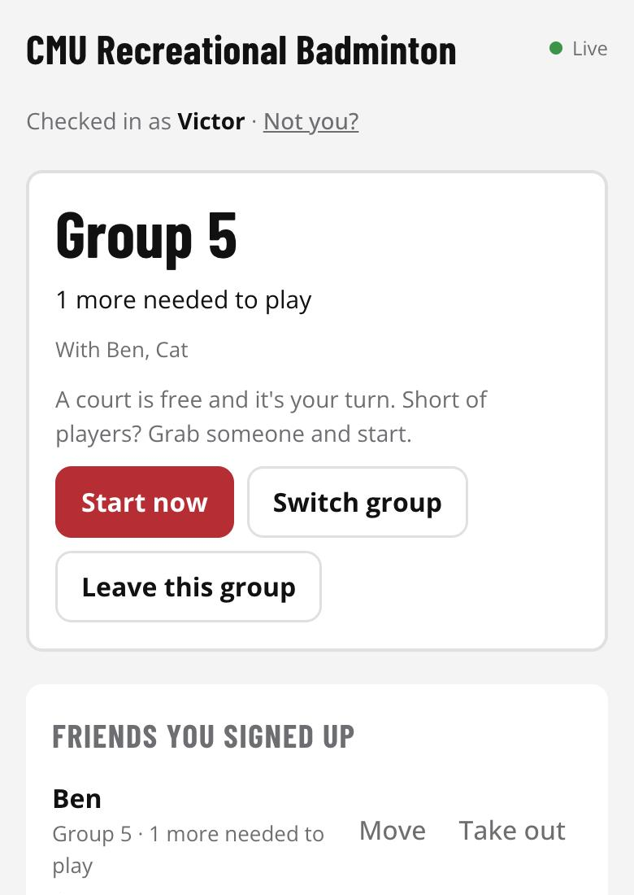
Start now, when it's your turn
Switching groups
Tap Switch group on your card and pick a group with room, or New group at the back. You can also drag the ⠿ handle next to your name (or a friend's) onto another group.
Starting short
If your group is first in line and a court is free but you're not four yet, tap Start now twice and grab whoever is around to fill in. The app picks the court for you. Groups further back can't start early; they wait their turn.
cmubmt.vercel.appPlayers · 6
CMU Recreational BadmintonFor players
6 · Playing, finishing, history
Finishing on time keeps the line moving for everyone.
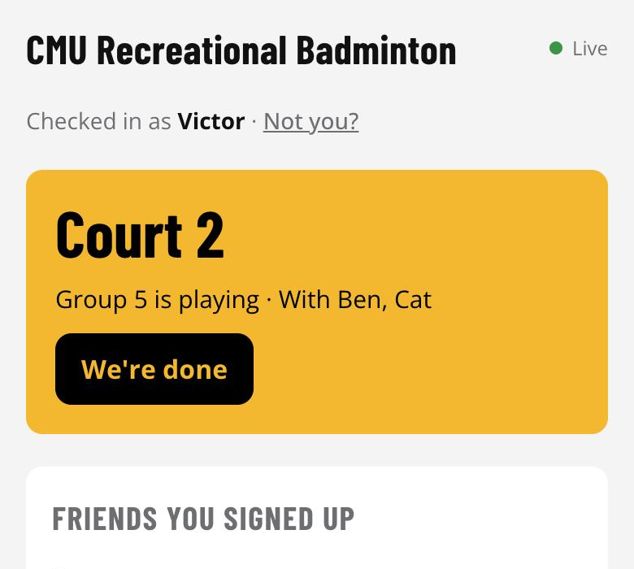
Your card while you play
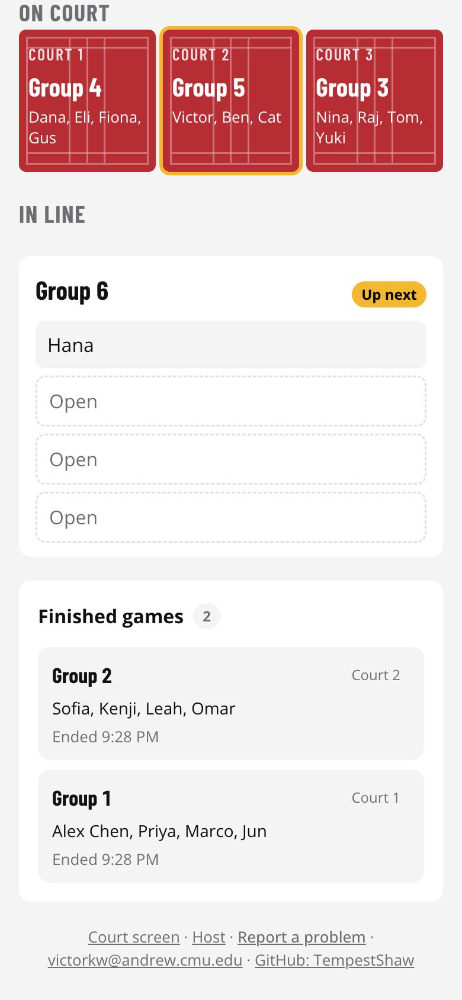
Finished games, newest first
When your game ends
Tap We're done twice on your card, or Done playing under your court on the court-side screen. The next group is called right away.
No phone? Use the court-side screen
The Sign up here box on the court-side screen takes up to four names at once. Anyone there can also drag people between groups.
Other things on the page
Finished games lists every game today: who played, on which court, when it ended.
Report a problem (bottom of the page) goes straight to the host.
Not you? at the top switches who is using this phone.
On your phone, open cmubmt.vercel.app/host, enter the host password and tap Start today's session. Today's code appears in big red letters.
2. Set up the court-side screen
On the computer by the courts, open cmubmt.vercel.app/kiosk and unlock it once with the host password. It then shows today's code, a QR code for people to scan, the courts and the line. Optional: tap 🔊 Read names aloud and the computer reads out each group as it's called (“Group 5, please go to court 2”). This is spoken by the computer; it's separate from phone alerts.
3. Tell people
“Scan the QR code on the screen to sign up. iPhone users, add it to your Home Screen first so it can buzz you.”
Today panel
New code: if the code was shared outside the hall. Everyone already checked in stays.
Start a new day: clears everything and makes a new code.
End today: see page 10.
⚠ Signed up twice appears here if anyone holds two spots (see page 10).
Buttons that are hard to undo need a second tap within four seconds.
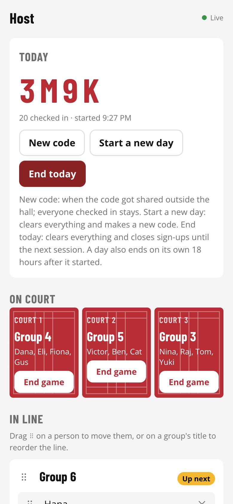
The host page
cmubmt.vercel.app/hostHost · 8
CMU Recreational BadmintonFor the host
8 · Running the line
The line runs itself. You step in for exceptions.
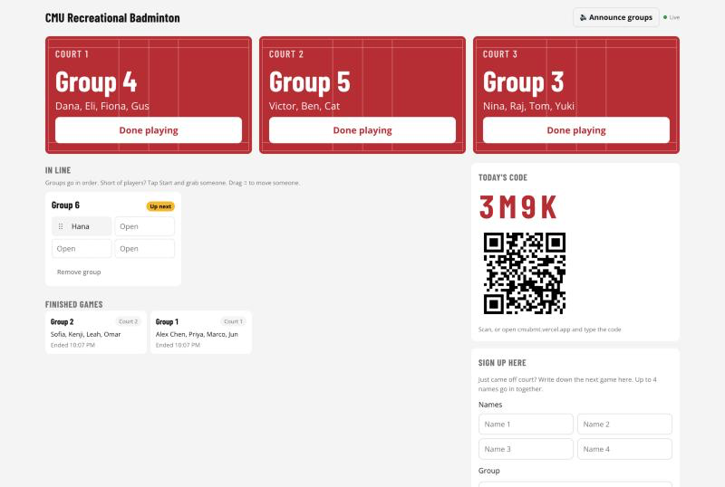
The court-side screen: courts, the line, today's code and walk-up sign-up
Courts
End game under a court frees it; the next full group is called automatically. Back to line undoes starting the wrong group: the court frees up and that group goes back to the front of the line.
The line
Drag ⠿ on a person to move them; drag ⠿ on a group's title (or use ↑ / ↓) to reorder groups.
Start now starts any group on a free court, even out of order (e.g. the first group isn't here yet).
✕ removes one person; Remove group calls a whole group off (it stays in the history).
Players can only move themselves and friends they signed up, and only the first group can start early from a phone. The court-side screen can do everything here except reorder groups and remove single people.
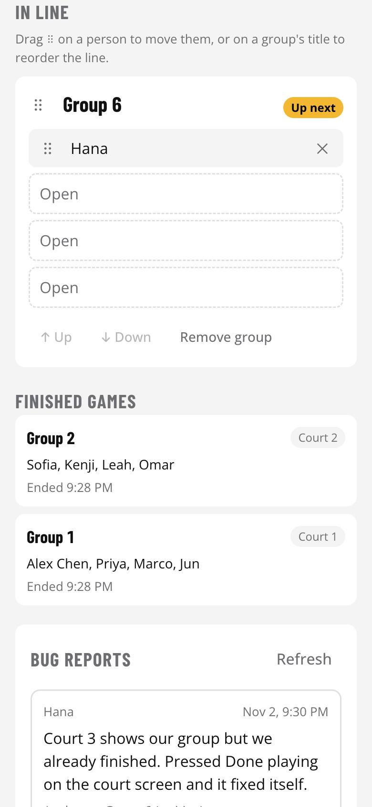
Line tools: ⠿ drag, ✕ remove, ↑ ↓, Remove group
cmubmt.vercel.app/hostHost · 9
CMU Recreational BadmintonFor the host
9 · Fixing mistakes, ending the day
Every slip at the courts can be put right from the host page.
Fixing mistakes
What happened
What to tap
Someone pressed End game / Done playing on a game still going
Undo end on that game in Finished games: it goes back on its court (or to the front of the line if the court was taken). No new alerts go out.
A group was removed by mistake
Bring back in Finished games: back to the front of the line.
The wrong group was started
Back to line under that court.
A name has a typo
Checked in → Rename. It changes everywhere.
Someone used another person's name, or checked in twice
Checked in → Remove: they leave the line and the name is free for the right person.
Someone holds two spots (⚠ Signed up twice, 2× in the line)
It's one spot per person. If someone ends up with two (say a friend wrote them into the next game while they were still playing), decide whether it's fair and remove the extra spot with ✕ if not.
You tapped Start a new day or End today by mistake
Undo: bring back the cleared day in the Today panel, within 30 minutes.
End the day
Tap End today twice. Courts, line and check-ins clear and phones show “No session is running right now”, so nobody sees yesterday's line tomorrow. Forgot? A session ends on its own 18 hours after it started.
Bug reports and other help
Report a problem messages show up under Bug reports with the sender's name, page and phone type.
No alerts on someone's phone: iPhone must use the Home Screen app and allow notifications; “Send a test in 10 seconds” checks it.
Court screen says it's locked: unlock it again with the host password (needed after the password changes).
Runs on free tiers (Vercel + Upstash), comfortable for about ten sessions a month. Built and maintained by Victor: victorkw@andrew.cmu.edu · github.com/TempestShaw.